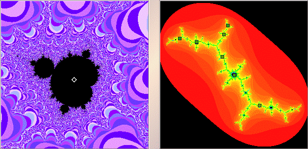

|  |
| In the selected Mandelbrot set window we see a midget Mandelbrot set lying in the antenna above the 3-cycle disc. |
| Selecting a point in the cardioid of this midget Mandelbrot set, on the right we see the Julia set. |
| Shift-clicking or right clicking a point near |
| So again the cycle of the cardioid of a midget Mandelbrot set in the antenna above a |
| Note that 4 + 3 = 7. Is this a coincidence, or is the sum rule valid for midget Mandelbrot sets? |
Return to Samples.